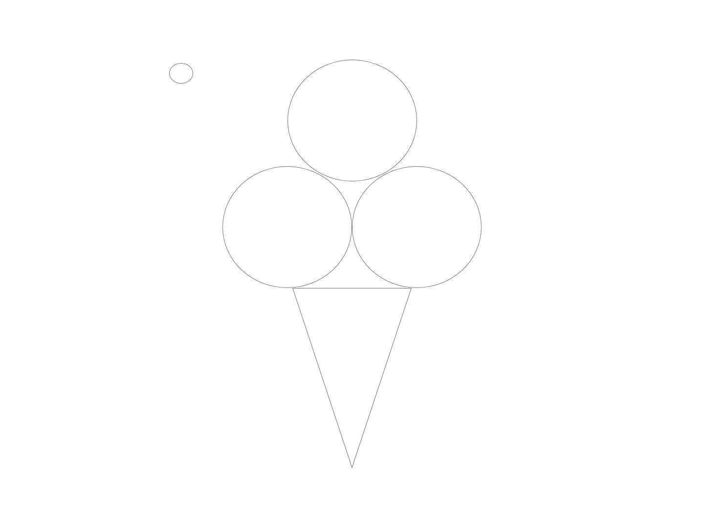

Draw an ice cream cone!
Instructions
- 1. Open up XD on your computer
- 2. Click "New File"
- 3. Adjust the size of your board to have a width of 1440 and a heigth of 1080 on the transform bar on the right side of your screen. Do not change the other default settings.
- 4. Now that your board is set up select the polygon icon on the left bar and draw a triangle with a width=297 and a height=393
- 5.Select the triangle and hover over one of the corners to flip it upside down.
- 6.Now select ellipse icon on the left bar to draw three circles of the same size (W=265 and H=249)
- 7.Place the ice cream balls on top of the cone, two of them next to each other and one on top.
- 8. Send the circle on the left to the back and then the top circle to the back of those two.
- 9. Now draw a smaller circle that is 49 wide and 42 high. This wil be the cherry
- 10. Email your drawing to me at emunozco@gmu.edu
Original Drawing
Claudia Drawing

Venice Drawing